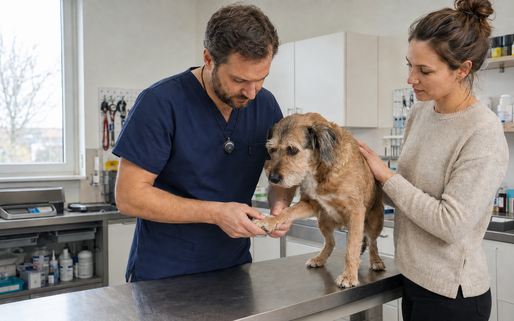
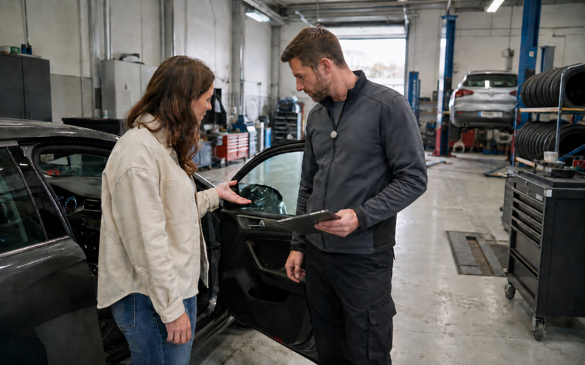

Podívejte se, jakou výhodu můžete ve svém oboru získat a kde vám inteligentní paměť ušetří nejvíc času i chyb.

Při další schůzce máte po ruce klientovy cíle, priority i důvody jeho dřívějších rozhodnutí.
Zobrazit scénář
Z prohlídky zůstane přesný obraz potřeb zájemce i důvodů, proč mu nemovitost nesedla.
Zobrazit scénář
Snadno dohledáte předchozí doporučení, dohodnutý postup i podklady, které klient ještě nedodal.
Zobrazit scénář
Při další kontrole máte po ruce vývoj potíží, reakci na léčbu i postřehy majitele z domácí péče.
Zobrazit scénářPři další návštěvě navážete na dosavadní průběh obtíží i důvody zvoleného postupu.
Zobrazit scénář
Před dalším sezením si připomenete důležitá témata i změny, které se během terapie objevily.
Zobrazit scénářU každé změny dohledáte původní zadání, důvod rozhodnutí i domluvu mezi účastníky projektu.
Zobrazit scénář
Mechanik dostane přesný popis závady včetně situací, ve kterých se problém objevuje.
Zobrazit scénářBěhem 60 minut projdeme vaše procesy a řekneme, kde má nahrávání a automatizace největší přínos.